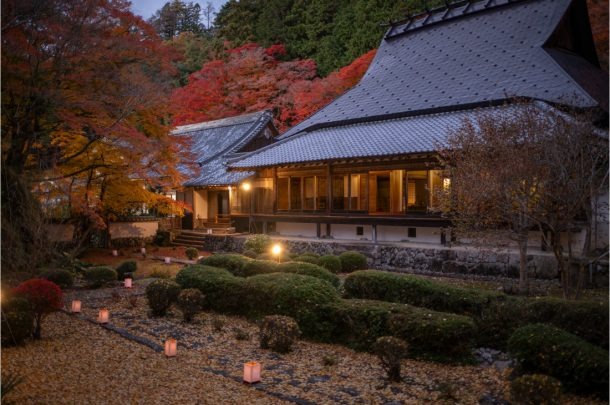
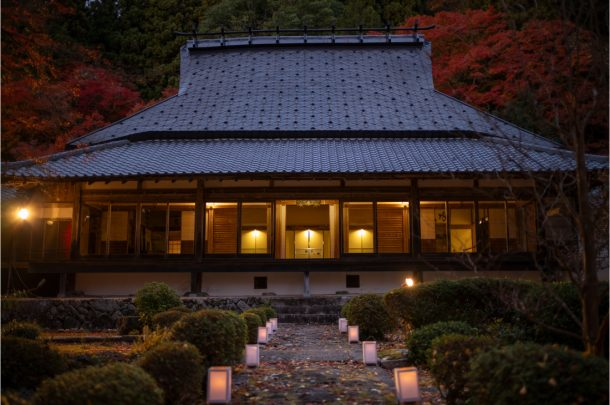
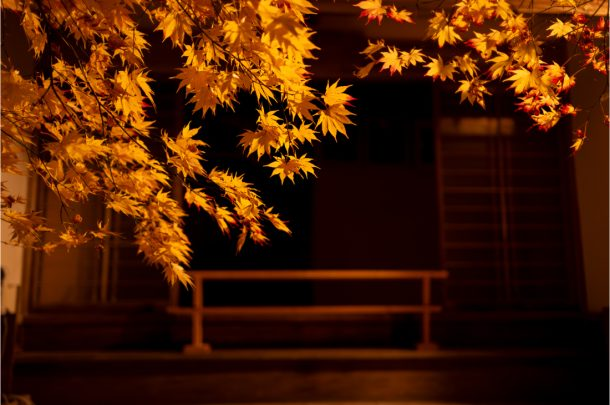
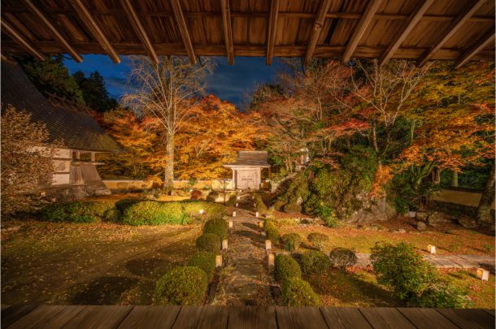
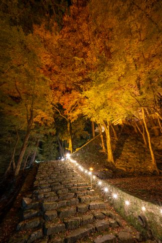
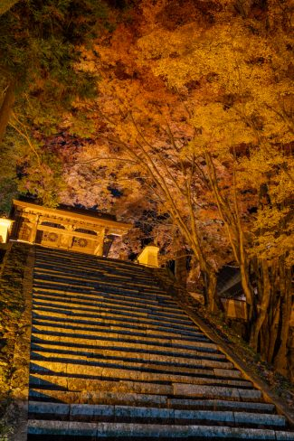

最新の情報は 公式サイトのツアーページ をご覧ください。
【京都駅発着】法常寺 紅葉ライトアップ送迎プラン ～亀岡の名刹で過ごす、秋の夜～
※法常寺の拝観料は旅行代金に含まれておりません。現地にてお支払いください。
◆参道・方丈南庭園 500円
◆全エリア 1,000円
→参道・方丈南庭園・本堂・寺宝・方丈北庭園
京都・亀岡に佇む名刹「法常寺」へ、秋の夜のお出かけをしませんか？
昼間とはひと味違う、ライトアップされた法常寺。
色づいた紅葉がやわらかな灯りに照らされ、境内を幻想的な雰囲気へと彩ります。
京都駅から法常寺までは送迎付きなので、夜の山あいへのお出かけも安心。
現地では約60分、ゆっくりと紅葉ライトアップをお楽しみいただけます。
今年は一般公開される法常寺の秋の夜。
いつもとは少し違う京都を訪ねる、気軽な秋の小さな旅へ出かけませんか？
夜間特別拝観 フライヤー（PDF）
| 🍁おすすめポイント |
| 秋色に染まる法常寺の境内が、夜の灯りに照らされ幻想的な雰囲気に 昼間とはひと味違う、秋の夜ならではの美しい景色をお楽しみいただけます。 京都駅から法常寺まで往復送迎付き 公共交通機関でのアクセスを気にせず気軽にご参加いただけます 少人数での催行 ご家族やご友人とはもちろん、おひとり様での秋のお出かけにもおすすめです。 |
行程
| 時間 | 場所 |
| 17:45 | 京都駅八条口ＭＫタクシーのりば（集合・出発） |
| 19:00 | 法常寺（到着） ＜特別拝観・ライトラップ鑑賞／約60分＞ ★法常寺 Instagram |
| 21:20 | 京都駅（解散） |
※靴下のご着用にご協力お願いいたします。
※夜は冷え込みますので、暖かいお召し物でご参加ください。
※階段や坂をたくさんお上がりいただく行程がございます。歩きやすい靴でのご参加をおすすめします。
※渋滞等で予定通りの滞在時間をお取りすることができない場合がございます。予めご了承ください。






写真提供：＠hamnin1027ie さま
※掲載の写真はすべて過去に撮影されたものです
【MKトラベルLINE公式アカウント】
MKトラベルの新規ツアー情報をLINEでお届けいたします

【各SNSでも京都の情報やツアー情報をお届けしています】


旅行条件
| ツアー番号 | T284MM |
| 出発地 | 京都市 |
| 添乗員／ガイド | なし（乗務員がその業務を代行いたします）／なし |
| 食事 | なし |
| 最少催行人数 | 4名 |
お申込みについてのご注意
※最少催行人数は4名様です。最少催行人員に満たない場合は、旅行の実施を取りやめることがあります。出発の３日前にその旨をご連絡し、お客様から当社がお預かりしている旅行費用の全額をお返しいたします。
※旅行条件・旅行代金は、2026年9月1日現在を基準としています。
※行程および帰着時間は交通事情などにより変更になる場合があります。
※お申込みの前に弊社の募集型企画旅行規約をご確認ください。
よくある質問
法常寺に関しての質問はこちらをクリックQ. 法常寺とはどんなお寺ですか？
A.後水尾天皇ゆかりの寺院で、歴代の天皇より賜った多数の古文書や美術品の一部を公開されています。
京都の中心部から離れた場所にあり、静けさのなかで初夏は新緑、秋は紅葉が楽しめます。
庭園は多くの紅葉が植えられており、京都府指定名勝となっております。
（通常は庭園・本堂の拝観は事前予約が必要です）
Q. 京都駅から法常寺まではどのくらいかかりますか？
A.車で60～75分程度です。公共交通機関を利用の場合はJR・バスを乗り継いで90分程度です。
徒歩での移動をなくしたい方、乗り継ぎ時に発生する待ち時間をなくしたい方はぜひ本ツアーをご利用ください。
夜間の移動になりますので、タクシーのご利用が安心です。
Q.1名ですが、申し込みできますか？
A.はい。お一人参加の方もたくさんいらっしゃいますので、お気軽にお申し込みください。
Q.知り合いのみで参加したいです
A.貸切で再現できる場合もございますのでご相談ください。お問合せフォームはこちら
Q.参加したかったけど、時間が合いません
A.貸切で再現できる場合もございますのでご相談ください。お問合せフォームはこちら
Q. 境内ではどのくらい歩きますか？
A.京都駅から法常寺の山門前まではタクシーにてお送りさせていただきますが、到着後は階段や坂の移動がございますので、歩きやすい靴でのご参加を推奨しております。
Q. 雨天でも実施しますか？
A.雨天の場合も、原則実施予定です。暴風雨など天候状況によっては、中止となる場合がございます。
Q. 帰りも京都駅まで送ってもらえますか？
A.はい、お帰りの際もタクシーにて京都駅までお送りいたします。21:20ごろの帰着を予定しております。
＜お問合せフォームはこちら▶＞
＜MKトラベルTOPはこちら▶＞
＜おすすめツアー一覧はこちら▶＞
お支払い方法
【お電話・ご来店でのご予約の場合】
・クレジットカード決済
・コンビニ決済【WEBシステムよりご予約の場合】
・クレジットカード決済
・コンビニ決済
・ＴＡＣＰＯ
お支払方法詳細はこちら
お客様のご都合でご予約をキャンセルされる場合は、すみやかに下記お問合せ先までご連絡ください。
◆コンビニ決済をご選択の場合、支払期限を過ぎますとご予約は自動的にキャンセルとなりますのでご注意ください。
◆お客様のご都合でご予約をキャンセルされた場合、下記キャンセル料を申し受けます。お支払いいただきました旅行代金よりキャンセル料を相殺して、お客様へご返金させていただきます。
【店頭決済／銀行振込／コンビニ決済の場合】
お客様のご指定の口座へご返金させていただきます。
【クレジットカード決済の場合】
ご利用のクレジットカード会社を経由して、ご返金させていただきます。締め日のタイミングによっては一度請求が発生し、その後返金処理となります。キャンセル料
11日目に当たる日以前
無料
10日目に当たる日以前
20%
7日目に当たる日以前
30%
旅行開始日の前日
40%
旅行開始日の当日
50%
旅行開始後又は無連絡
100%